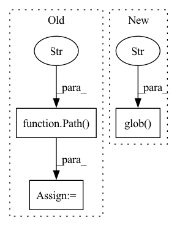

Pattern ID :11256

Before Change
return image
def _load(self):
base = Path("/usr/src/data/animefacedataset/images")
image_paths = base.glob("*")
image_paths = [str(path) for path in image_paths]
return image_paths
class YearAnimeFaceDataset(Dataset):
After Change
super().__init__(transform)
def _load(self):
return glob.glob("/usr/src/data/animefacedataset/images/*")
class YearAnimeFaceDataset(AnimeFaceDataset):
"""AnimeFaceDataset with minimum year option
"""
In pattern: SUPERPATTERN
Frequency: 3
Non-data size: 3
Instances
Fragment ID: 38363359
Project Name: stomoya/animeface
Commit Name: 21e86e8dc2d49667e6edb8863004a229eeb6798a
Time: 2021-02-20
Author: blackie0110@gmail.com
File Name: implementations/general/anime_face.py
M Class Name: AnimeFaceDataset
N Class Name: AnimeFaceDataset
M Method Name: _load(1)
N Method Name: _load(1)
M Parent Class: Image
N Parent Class: Dataset
M File Name: implementations/general/anime_face.py
N File Name: implementations/general/anime_face.py
M Start Line: 42
M End Line: 45
N Start Line: 25
N End Line: 25
'>
Before Change
all_fps = [train_rgbs, val_rgbs, test_rgbs]
// prepare and execute file copying
out_path = Path("data").absolute() / "synpick_vid_{}".format(int(time.time()))
out_path.mkdir(parents=True)
all_out_paths = [(out_path / "train" / "rgb"), (out_path / "val" / "rgb"), (out_path / "test" / "rgb")]
copy_imgs(all_fps, all_out_paths)
After Change
val_segs.append(seg)
test_rgbs = sorted(test_path.glob("*/rgb/*.jpg"))
test_segs = sorted(test_path.glob("*/class_index_masks/*.png"))
all_fps = [train_rgbs, train_segs, val_rgbs, val_segs, test_rgbs, test_segs]
copy_synpick_data(all_fps, f"vid_{path.stem}", cfg.timestamp)
'>
Fragment ID: 38363362
Project Name: ais-bonn/vp-suite
Commit Name: ee1627faf59f835bdcd0693752c2eeb413c5c02c
Time: 2021-07-22
Author: boltres@ais.uni-bonn.de
File Name: scripts/prepare_synpick.py
M Class Name: AnonimousClass
N Class Name: AnonimousClass
M Method Name: prepare_synpick_vid(1)
N Method Name: prepare_synpick_vid(1)
M Parent Class:
N Parent Class:
M File Name: scripts/prepare_synpick.py
N File Name: scripts/prepare_synpick.py
M Start Line: 65
M End Line: 90
N Start Line: 54
N End Line: 82
'>
Before Change
return image
def _load(self):
base_path = Path("/usr/src/data/danbooru/danbooru-images")
image_paths = base_path.glob("**/*.jpg")
image_paths = [str(path) for path in image_paths]
return image_paths
After Change
transform = make_default_transform(image_size, 1.2)
super().__init__(transform)
def _load(self):
return glob.glob("/usr/src/data/danbooru/danbooru-images/**/*.jpg", recursive=True)
class GeneratePairImageDanbooruDataset(DanbooruDataset):
"""Automatically generated pair images Danbooru Dataset
"""
'>
Fragment ID: 38363365
Project Name: stomoya/animeface
Commit Name: 21e86e8dc2d49667e6edb8863004a229eeb6798a
Time: 2021-02-20
Author: blackie0110@gmail.com
File Name: implementations/general/danbooru.py
M Class Name: DanbooruDataset
N Class Name: DanbooruDataset
M Method Name: _load(1)
N Method Name: _load(1)
M Parent Class: Image
N Parent Class: Dataset
M File Name: implementations/general/danbooru.py
N File Name: implementations/general/danbooru.py
M Start Line: 31
M End Line: 35
N Start Line: 14
N End Line: 14